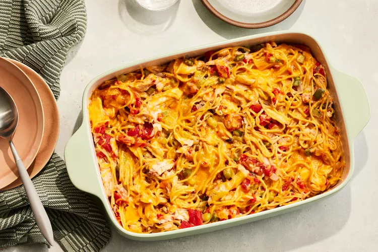

Lasanga

Stick-to-your-bones casseroles are a Southern cooking staple, and this chicken spaghetti
casserole is no exception. Featuring melty cheese, creamy soup, and hearty chicken and
pasta, it's the perfect meal to serve a hungry crowd.
Learn everything you need to know about this tasty chicken casserole, and enjoy serving
chicken spaghetti casserole to your family soon.
Chicken spaghetti casserole was made almost exclusively in Mississippi until famed food
writer Craig Claiborne included a recipe for the dish in his cookbook Craig Claiborne's
Southern Cooking, published in 1987.
With chicken, vegetables, and pasta all held together by a creamy sauce, this casserole is
a well-rounded, family-friendly meal. It combines cooked chicken, cooked spaghetti, and
sautéed vegetables, plus cream of mushroom soup and shredded cheese. Then everything bakes
together to hot and gooey perfection.
- 1 (4-lb.) whole chicken
- 4 Tbsp. kosher salt
- 1 bay leaf
- 8 oz. uncooked spaghetti
- 3 Tbsp. butter
- 1 large yellow onion, chopped
- 1/2 medium-size green pepper, coarsely chopped
- 2 celery ribs, chopped
- 2 garlic cloves, minced
- 1 (10 3/4-oz.) can cream of mushroom soup
- 1 (28-oz.) can diced tomatoes, drained and chopped
- 1 tsp. Worcestershire sauce
- 4 drops of hot sauce
- 1/8 tsp. freshly ground black pepper
- Vegetable cooking spray
- 1 cup (4 oz.) shredded medium Cheddar cheese
- Place first 3 ingredients and water to cover in a large Dutch oven. Bring to a boil over
high heat. Cover and reduce heat to medium-low. Simmer 1 hour or until tender. Remove
chicken, reserving broth in Dutch oven. Cool chicken completely (about 20 minutes).
Discard bay leaf. Skin and bone chicken, and cut meat into pieces.
- Preheat oven to 350°F. Remove and reserve ¼ cup chicken broth. Bring remaining broth in
Dutch oven to a boil over high heat. Break spaghetti into thirds, and cook in broth 12 to
15 minutes or until tender; drain well, discarding broth. Return spaghetti to Dutch oven.
- Melt butter in a large skillet over medium-high heat. Add onion and next 3 ingredients,
and sauté 5 minutes or until tender; add to spaghetti. Stir together soup and ¼ cup reserved
broth; stir into spaghetti mixture. Stir in chicken, tomatoes, and next 3 ingredients.
Add salt to taste. Spoon mixture into a lightly greased (with cooking spray) 13- x 9-inch
baking dish. Top with cheese.
- Bake at 350°F for 15 to 20 minutes or until cheese melts.
Source of the recipe